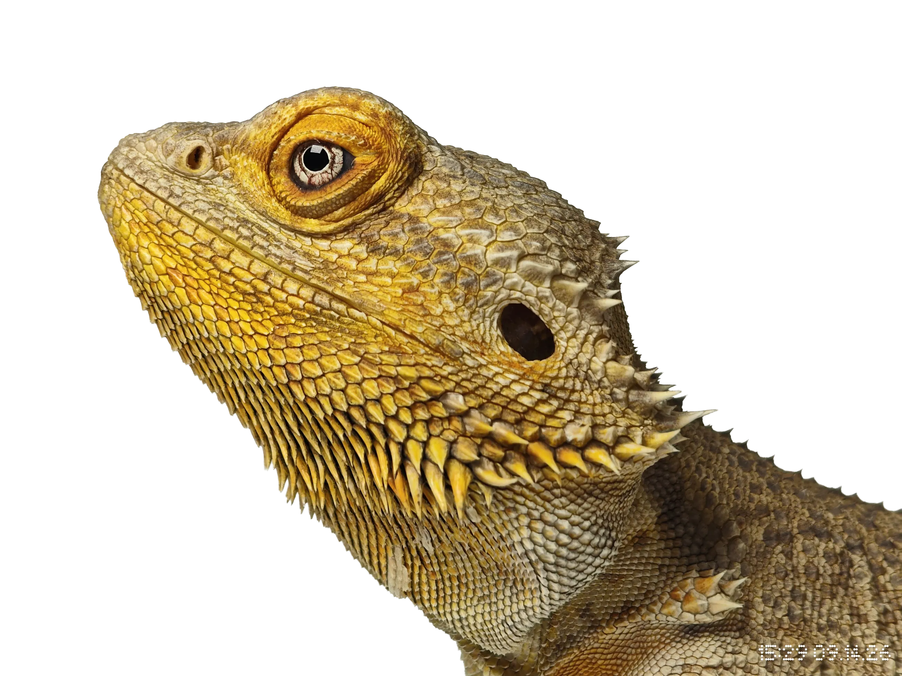

部長挨拶
こ んちちは、部長です。この度は生物園芸部にお越しいただきましてありがとうございます。
例年の 2 倍である 20 人が新入部員として入ってきました。今までは広く感じていた生物実
験室が狭く感じました。生物部の人気があることが嬉しくも思いますが、マイナーな部活と
いう感じが好きだったので寂しさもあります。
普段の活動ではみんながそれぞれやりたいことを見つけて、活動しているという雰囲気が
ありました。また今年は魚類班の人達が一生懸命魚を飼育してくれたおかげで例年より多
くの魚を見ることができます。待ち時間に部誌を読んでいると思いますので、ぜひ楽しみに
していただけたらいいなと思います。
僕はこの一年間部長をやってきました。そこでは部長として部員達に指示を出さなければ
いけないこともありました。それはとても大変なことでした。部長になってから気づいたの
ですが、誰かに「 次これやって」と言われて動くことはとても楽です。例えば、全て副部長
がやってくれた八丈島採集はとても楽しかったです。この経験を活かし、これからは指示待
ち人間として生きていきたいなと思います。僕たちの展示を楽しんでいただき、小学生の男
の子達は生物園芸部に憧れてこの学校に入学してくれたらいいなと思います。
2026年 9月 西谷
タイトルについて
こ んにちは。2026年度興風祭に来場してくださり、そして生物園芸部に訪れてくださり、おまけに部誌まで読んでいただいて本当にありがとうございます。副部長の長村です。
私からは部誌のタイトルについて少しお話をさせていただきます。今年から生物園芸部の部誌にはタイトルがつきました。表紙に書いてある、「進櫂」です。このタイトルは私の発案なのですが、そこには3つの意味が込められています。まず、字の意味として「未知へ漕ぎ出す意思」です。まだ誰も見たことのない生物の謎や学間の未踏の地へ、自らの手でこぎ進むという研究者の熱意を象徴しています。一方で音の響きは、無限の可能性を秘めた地球最後のフロンティア、「深海」にかけています。そして一番意識したのが、「しんかい 6500」です。皆さんはご存じでしょうか？世界でも2番目に深く潜れる、日本最強の潜水艇です。
この冊子はナンバリングを始めた1冊目なので0001ですが、年を重ねるごとに「進櫂0002」、「進櫂0003」、、、と水深が深くなっていくようなイメージをしています。
6500年後には「進櫂6501」となり、日本最強も超えていく算段です。どうでしょうか。少しでもロマンを感じていただければ幸いです。それでは、そろそろお別れです。ここまで読んでいただきありがとうございました。
2026年 9月 長村
X @waseda_seibutu
A club for biology,
by biology,
and about biology.
真・編集後記
こ んにちは。本当に編集した者です。なんか紙で作った部誌が全然足りないという緊急事態を受けて急遽作成したこのWeb版部誌、楽しんでいただけましたか？
個人的にスペース無限、色も自由に使っていいという点でこっちの方が作ってて楽しかったです。部員たちの写真も白黒になって残念な感じになってましたがWeb版だとカラーで見れていいことづくしです。
ただ、一日目の興風祭で圧倒的に足りないことがわかって徹夜で作ってるのでミスってるところもあるかも知れませんがご容赦下さい。
と言うことで僕は眠いのでもう寝ます。おやすみなさい。Best of Wasedaの投票だけ忘れずにお願いしまs
2026年 9月